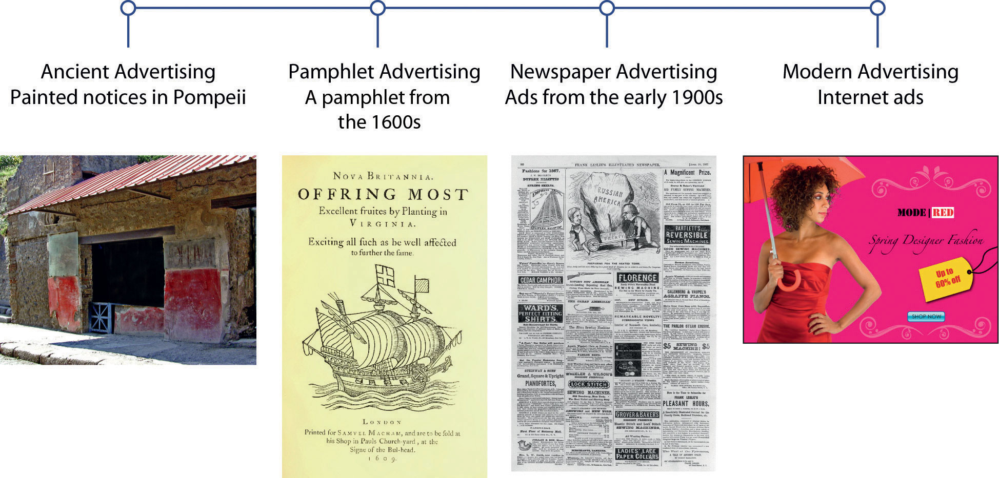
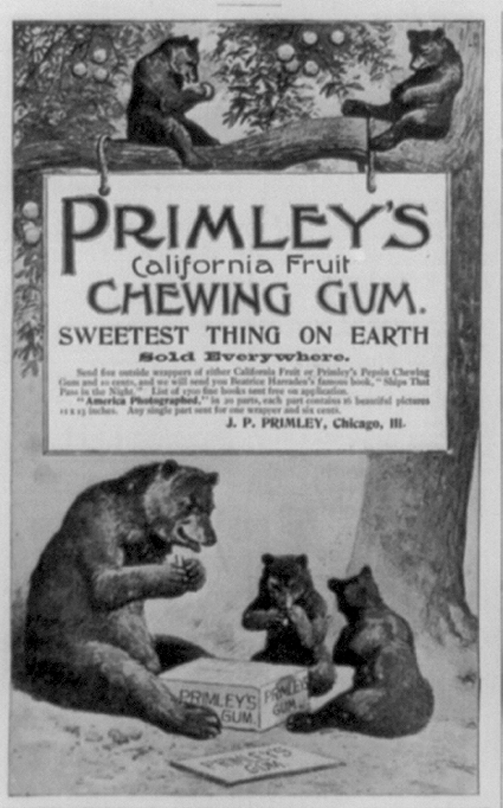
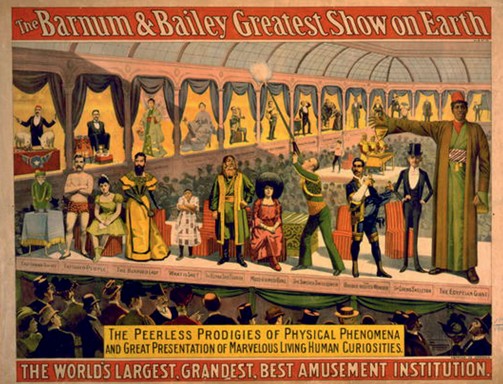
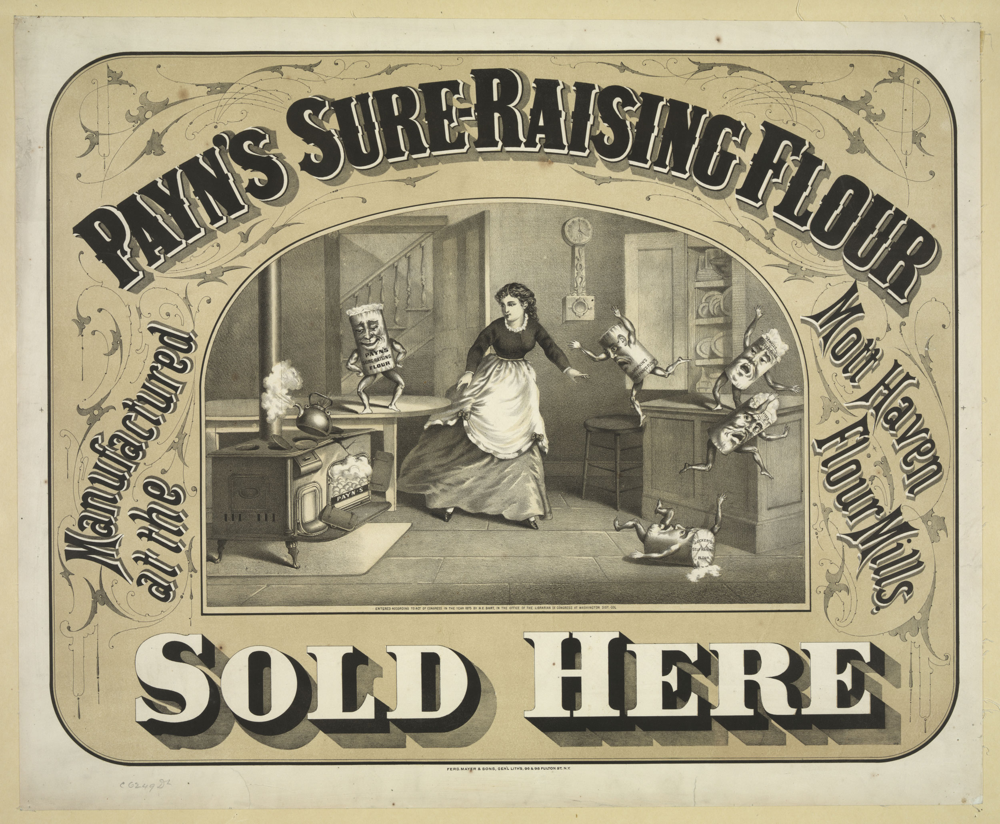
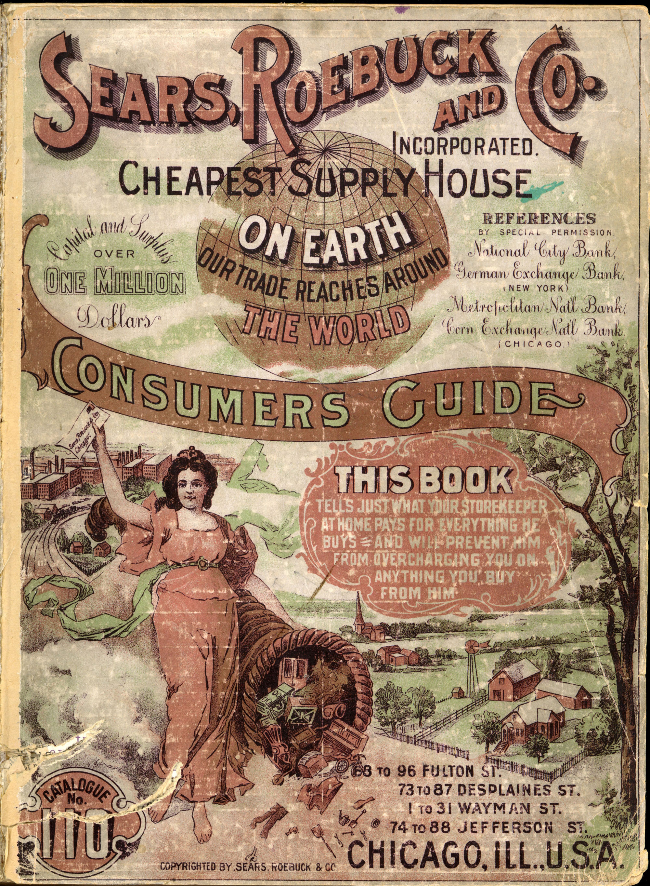
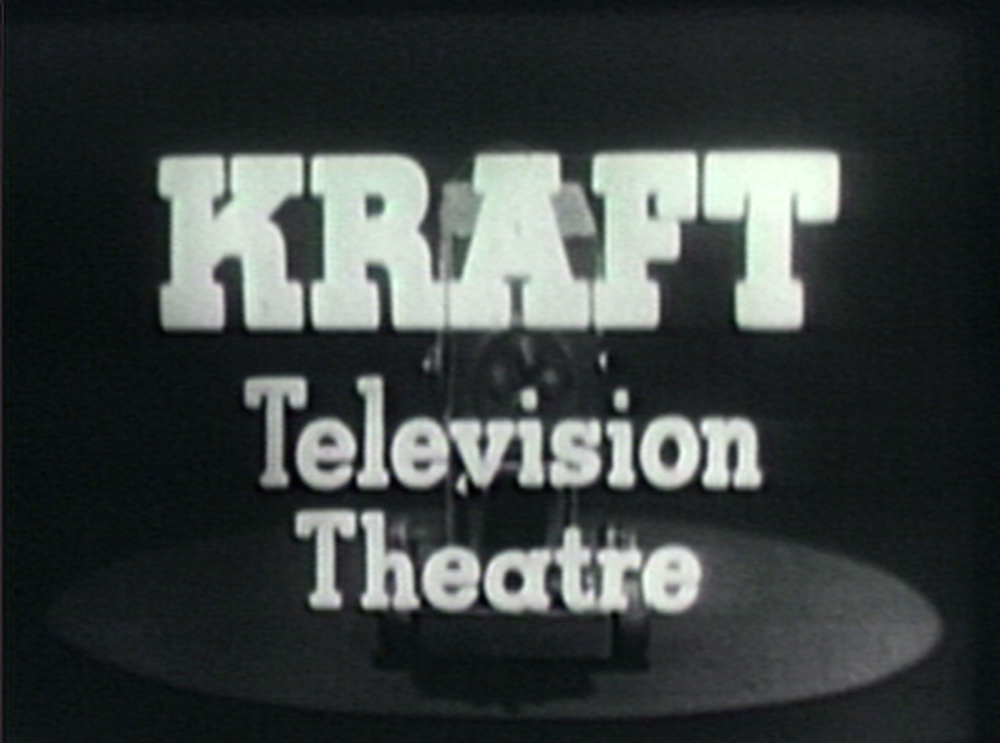
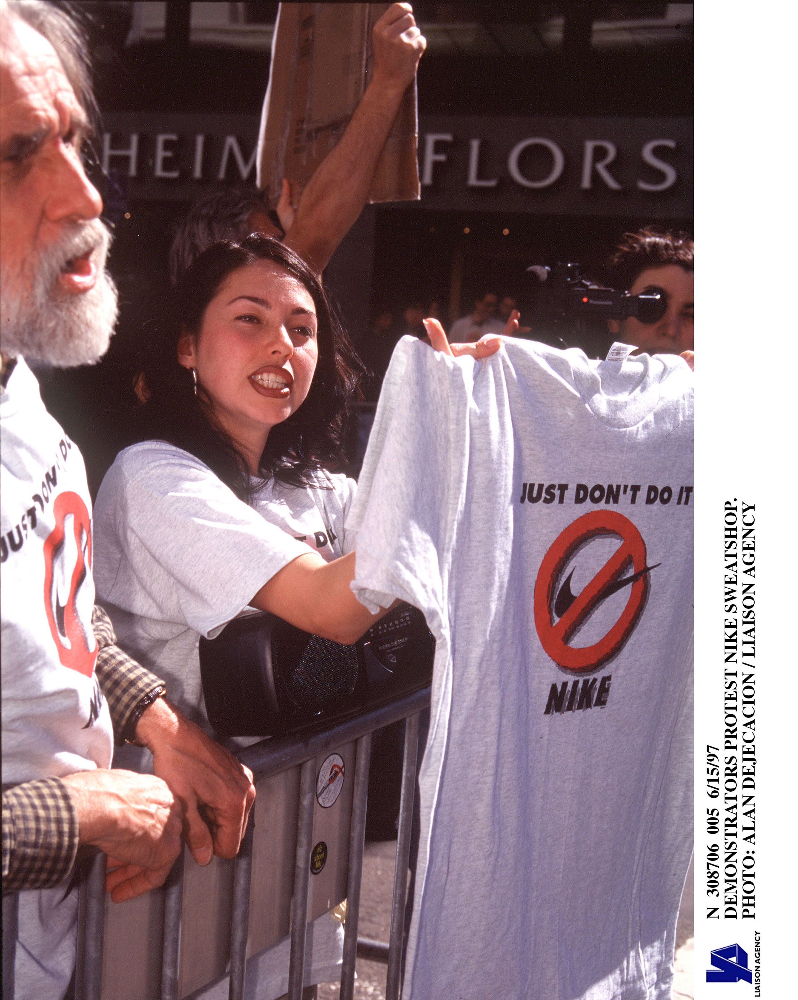
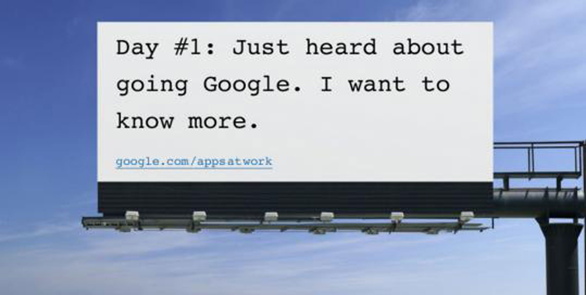
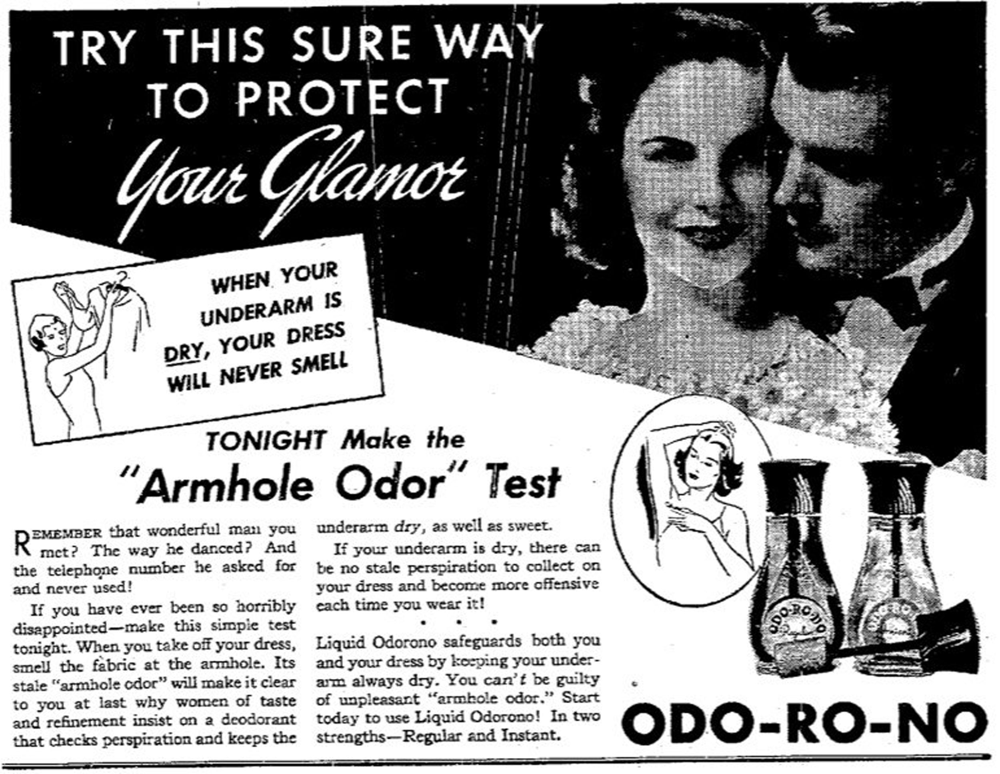
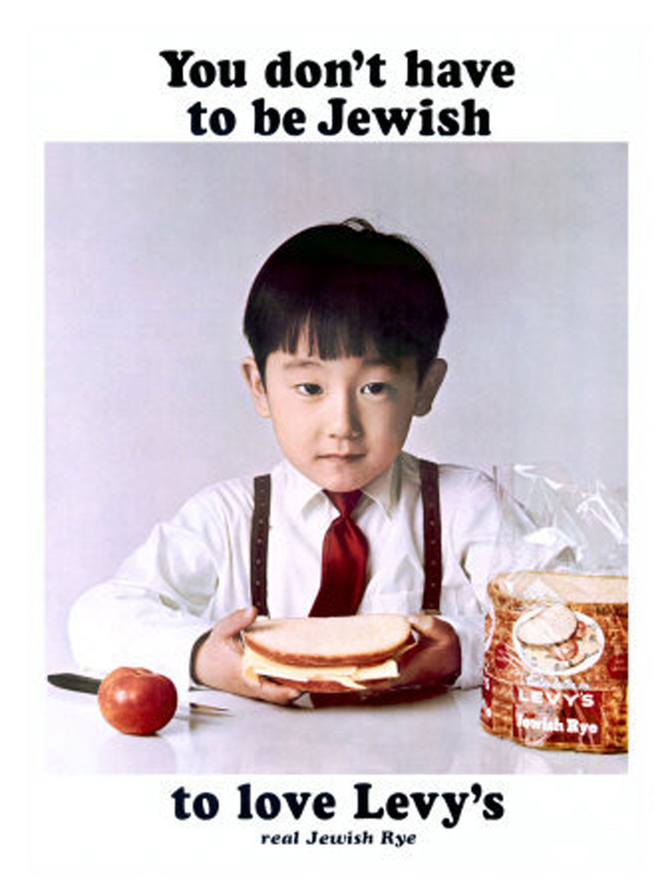

AdvertisingPromoting a product or service through paid announcements. is defined as promoting a product or service through the use of paid announcements.Dictionary.com, s.v. “Advertising,” http://dictionary.reference.com/browse/advertising. These announcements have had an enormous effect on modern culture, and thus deserve a great deal of attention in any treatment of the media’s influence on culture.
Figure 12.1
History of Advertising
Advertising dates back to ancient Rome’s public markets and forums and continues into the modern era in most homes around the world. Contemporary consumers relate to and identify with brands and products. Advertising has inspired an independent press and conspired to encourage carcinogenic addictions. An exceedingly human invention, advertising is an unavoidable aspect of the shared modern experience.
In 79 CE, the eruption of Italy’s Mount Vesuvius destroyed and, ultimately, preserved the ancient city of Pompeii. Historians have used the city’s archaeological evidence to piece together many aspects of ancient life. Pompeii’s ruins reveal a world in which the fundamental tenets of commerce and advertising were already in place. Merchants offered different brands of fish sauces identified by various names such as “Scaurus’ tunny jelly.” Wines were branded as well, and their manufacturers sought to position them by making claims about their prestige and quality. Toys and other merchandise found in the city bear the names of famous athletes, providing, perhaps, the first example of endorsement techniques.John Hood, Selling the Dream: Why Advertising Is Good Business (Westport, CT: Praeger, 2005), 12–13.
The invention of the printing press in 1440 made it possible to print advertisements that could be put up on walls and handed out to individuals. By the 1600s, newspapers had begun to include advertisements on their pages. Advertising revenue allowed newspapers to print independently of secular or clerical authority, eventually achieving daily circulation. By the end of the 16th century, most newspapers contained at least some advertisements.William M. O’Barr, “A Brief History of Advertising in America,” Advertising & Society Review 6, no. 3 (2005), http://muse.jhu.edu/journals/asr/v006/6.3unit02.html.
European colonization of the Americas during the 1600s brought about one of the first large-scale advertising campaigns. When European trading companies realized that the Americas held economic potential as a source of natural resources such as timber, fur, and tobacco, they attempted to convince others to cross the Atlantic Ocean and work to harvest this bounty. The advertisements for this venture described a paradise without beggars and with plenty of land for those who made the trip. The advertisements convinced many poor Europeans to become indentured servants to pay for the voyage.Christina B. Mierau, Accept No Substitutes: The History of American Advertising (Minneapolis, MN: Lerner, 2000), 7–8.
Figure 12.2
Early penny press papers such as the New York Sun took advantage of advertisements, which allowed them to sell their issues for a penny or two.
The rise of the penny press during the 1800s had a profound effect on advertising. The New York Sun embraced a novel advertising model in 1833 that allowed it to sell issues of the paper for a trifling amount of money, ensuring a higher circulation and a wider audience. This larger audience in turn justified greater prices for advertisements, allowing the paper to make a profit from its ads rather than from direct sales.Jennifer Vance, “Extra, Extra, Read All About It!” Penny Press, http://iml.jou.efl.edu/projects/Spring04/vance/pennypress.html.
The career of P. T. Barnum, cofounder of the famed Barnum & Bailey circus, gives a sense of the uncontrolled nature of advertising during the 1800s. He began his career in the 1840s writing ads for a theater, and soon after, he began promoting his own shows. He advertised these shows any way he could, using not only interesting newspaper ads but also bands of musicians, paintings on the outside of his buildings, and street-spanning banners.
Barnum also learned the effectiveness of using the media to gain attention. In an early publicity stunt, Barnum hired a man to wordlessly stack bricks at various corners near his museum during the hours preceding a show. When this activity drew a crowd, the man went to the museum and bought a ticket for the show. This stunt drew such large crowds over the next two days, that the police made Barnum put a halt to it, gaining it even wider media attention. Barnum was sued for fraud over a bearded woman featured in one of his shows; the plaintiffs claimed that she was, in fact, a man. Rather than trying to keep the trial quiet, Barnum drew attention to it by parading a crowd of witnesses attesting to the bearded woman’s gender, drawing more media attention—and more customers.
Figure 12.3
P. T. Barnum used the press to spark interest in his shows.
Barnum aimed to make his audience think about what they had seen for an extended time. His Feejee mermaid—actually a mummified monkey and fish sewn together—was not necessarily interesting because viewers thought the creation was really a mermaid, but because they weren’t sure if it was or not. Such marketing tactics brought Barnum’s shows out of his establishments and into social conversations and newspapers.Edd Applegate, Personalities and Products: A Historical Perspective on Advertising in America (Westport, CT: Greenwood Press, 1998), 57–64. Although most companies today would eschew Barnum’s outrageous style, many have used the media and a similar sense of mystery to promote their products. Apple, for example, famously keeps its products such as the iPhone and iPad under wraps, building media anticipation and coverage.
In 1843, a salesman named Volney Palmer founded the first U.S. advertising agency in Philadelphia. The agency made money by linking potential advertisers with newspapers. By 1867, other agencies had formed, and advertisements were being marketed at the national level. During this time, George Rowell, who made a living buying bulk advertising space in newspapers to subdivide and sell to advertisers, began conducting market research in its modern recognizable form. He used surveys and circulation counts to estimate numbers of readers and anticipate effective advertising techniques. His agency gained an advantage over other agencies by offering advertising space most suited for a particular product. This trend quickly caught on with other agencies. In 1888, Rowell started the first advertising trade magazine, Printers’ Ink.Ellen Gartrell, “More About Early Advertising Publications,” Digital Collections, Duke University Libraries, http://library.duke.edu/digitalcollections/eaa/printlit.html.
In Chapter 5 "Magazines", you read about McClure’s success in 1893 thanks to an advertising model: selling issues for nearly half the price of other magazines and depending on advertising revenues to make up the difference between cost and sales price. Magazines such as Ladies’ Home Journal focused on specific audiences, so they allowed advertisers to market products designed for a specific demographic. By 1900, Harper’s Weekly, once known for refusing advertising, featured ads on half of its pages.All Classic Ads, “Advertising Timeline,” Vintage Collection, All Classic Ads, http://www.allclassicads.com/advertising-timeline.html.
Figure 12.4
In the early 1900s, brand-name food items, such as this one, began making a household name for themselves.
Another ubiquitous aspect of advertising developed around this time: brands. During most of the 19th century, consumers purchased goods in bulk, weighing out scoops of flour or sugar from large store barrels and paying for them by the pound. Innovations in industrial packaging allowed companies to mass produce bags, tins, and cartons with brand names on them. Although brands existed before this time, they were generally reserved for goods that were inherently recognizable, such as china or furniture. Advertising a particular kind of honey or flour made it possible for customers to ask for that product by name, giving it an edge over the unnamed competition.Christina B. Mierau, Accept No Substitutes: The History of American Advertising (Minneapolis, MN: Lerner, 2000), 42.
Figure 12.5
Department stores such as Sears, Roebuck and Co. reached consumers outside of the city through mail-order catalogs.
The rise of department stores during the late 1800s also gave brands a push. Nationwide outlets such as Sears, Roebuck & Company and Montgomery Ward sold many of the same items to consumers all over the country. A particular item spotted in a big-city storefront could come to a small-town shopper’s home thanks to mail-order catalogs. Customers made associations with the stores, trusting them to have a particular kind of item and to provide quality wares. Essentially, consumers came to trust the store’s name rather than its specific products.John Hood, Selling the Dream: Why Advertising Is Good Business (Westport, CT: Praeger, 2005), 28–51.
Although advertising was becoming increasingly accepted as an element of mass media, many still regarded it as an unseemly occupation. This attitude began to change during the early 20th century. As magazines—widely considered a highbrow medium—began using more advertising, the advertising profession began attracting more artists and writers. Writers used verse and artists produced illustrations to embellish advertisements. Not surprisingly, this era gave rise to commercial jingles and iconic brand characters such as the Jolly Green Giant and the Pillsbury Doughboy.
The household cleaner Sapolio produced advertisements that made the most of the artistic advertising trend. Sapolio’s ads featured various drawings of the residents of “Spotless Town” along with a rhymed verse celebrating the virtues of this fictional haven of cleanliness. The public anticipated each new ad in much the same way people today anticipate new television episodes. In fact, the ads became so popular that citizens passed “Spotless Town” resolutions to clean up their own jurisdictions. Advertising trends later moved away from flowery writing and artistry, but the lessons of those memorable campaigns continued to influence the advertising profession for years to come.Stephen Fox, The Mirror Makers (New York: William Morrow, 1984), 41–46.
World War I fueled an advertising and propoganda boom. Corporations that had switched to manufacturing wartime goods wanted to stay in the public eye by advertising their patriotism. Equally, the government needed to encourage public support for the war, employing such techniques as the famous Uncle Sam recruiting poster. President Woodrow Wilson established the advertiser-run Committee on Public Information to make movies and posters, write speeches, and generally sell the war to the public. Advertising helped popularize World War I on the homefront, and the war in turn gave advertising a much-needed boost in stature. The postwar return to regular manufacturing initiated the 1920s as an era of unprecedented advertising.Stephen Fox, The Mirror Makers (New York: William Morrow, 1984), 74–77.
The rising film industry made celebrity testimonials, or product endorsementsSupport from a celebrity or well-known person for a particular product or service., an important aspect of advertising during the 1920s. Film stars including Clara Bow and Joan Crawford endorsed products such as Lux toilet soap. In these early days of mass-media consumer culture, film actors and actresses gave the public figures to emulate as they began participating in popular culture.Stephen Fox, The Mirror Makers (New York: William Morrow, 1984), 89.
As discussed in Chapter 7 "Radio", radio became an accepted commercial medium during the 1920s. Although many initially thought radio was too intrusive a medium to allow advertising, as it entered people’s homes by the end of the decade, advertising had become an integral aspect of programming. Advertising agencies often created their own programs that networks then distributed. As advertisers conducted surveys and researched prime time slots, radio programming changed to appeal to their target demographics. The famous Lux Radio Theater, for example, was named for and sponsored by a brand of soap. Product placement was an important part of these early radio programs. Ads for Jell-O appeared during the course of the Jack Benny Show,JackBennyShow.com, “Jell-O,” Jack Benny Show, http://jackbennyshow.com/index_090.htm. and Fibber McGee and Molly scripts often involved their sponsor’s floor wax.Read G. Burgan, “Radio Fun with Fibber McGee and Molly,” RGB Digital Audio, January 24, 1996, http://www.rgbdigitalaudio.com/OTR_Reviews/Fibber_McGee_OTRArticle.htm. The relationship between a sponsor and a show’s producers was not always harmonious; the producers of radio programs were constrained from broadcasting any content that might reflect badly on their sponsor.
Unsurprisingly, the Great Depression, with its widespread decreases in levels of income and buying power, had a negative effect on advertising. Spending on ads dropped to a mere 38 percent of its previous level. Social reformers added to revenue woes by again questioning the moral standing of the advertising profession. Books such as Through Many Windows and Our Master’s Voice portrayed advertisers as dishonest and cynical, willing to say anything to make a profit and unconcerned about their influence on society. Humorists also questioned advertising’s authority. The Depression-era magazine Ballyhoo regularly featured parodies of ads, similar to those seen later on Saturday Night Live or in The Onion. These ads mocked the claims that had been made throughout the 1920s, further reducing advertising’s public standing.Stephen Fox, The Mirror Makers (New York: William Morrow, 1984), 121–124.
This advertising downturn lasted only as long as the Depression. As the United States entered World War II, advertising again returned to encourage public support and improve the image of businesses.Stephen Fox, The Mirror Makers (New York: William Morrow, 1984), 168. However, there was one lasting effect of the Depression. The rising consumer movement made false and misleading advertising a major public policy issue. At the time, companies such as Fleischmann’s (which claimed its yeast could cure crooked teeth) were using advertisements to pitch misleading assertions. Only business owners’ personal morals stood in the way of such claims until 1938, when the federal government created the Federal Trade Commission (FTC) and gave it the authority to halt false advertising.
Figure 12.6
Shows such as Kraft Television Theatre were created by single sponsors— in this case, Kraft Foods Inc.
In 1955, television outpaced all other media for advertising. television provided advertisers with unique, geographically oriented mass markets that could be targeted with regionally appropriate ads.Lawrence Samuel, Brought to You By: Postwar Television Advertising and the American Dream (Austin, TX: University of Texas Press, 2001), 88–94. The 1950s saw a 75 percent increase in advertising spending, faster than any other economic indicator at the time.Stephen Fox, The Mirror Makers (New York: William Morrow, 1984), 173.
Single sponsors created early television programs. These sponsors had total control over programs such as Goodyear TV Playhouse and Kraft Television Theatre. Some sponsors went as far as to manipulate various aspects of the programs. In one instance, a program run by the DeSoto car company asked a contestant to use a false name rather than his given name, Ford. The present-day network model of television advertising took hold during the 1950s as the costs of television production made sole sponsorship of a show prohibitive for most companies. Rather than having a single sponsor, the networks began producing their own shows, paying for them through ads sold to a number of different sponsors.Stephen Fox, The Mirror Makers (New York: William Morrow, 1984), 210–215. Under the new model of advertising, television producers had much more creative control than they had under the sole-sponsorship model.
The quiz shows of the 1950s were the last of the single-sponsor–produced programs. In 1958, when allegations of quiz show fraud became national news, advertisers moved out of programming entirely. The quiz show scandals also added to an increasing scepticism of ads and consumer culture.William Boddy, “The Seven Dwarfs and the Money Grubbers: The Public Relations Crisis of US Television in the Late 1950s,” in Logics of Television: Essays in Cultural Criticism, ed. Patricia Mellencamp (Bloomington, IN: Indiana University Press, 1990), 110.
Advertising research during the 1950s had used scientifically driven techniques to attempt to influence consumer opinion. Although the effectiveness of this type of advertising is questionable, the idea of consumer manipulation through scientific methods became an issue for many Americans. Vance Packard’s best-selling 1957 book The Hidden Persuaders targeted this style of advertising. The Hidden Persuaders and other books like it were part of a growing critique of 1950s consumer culture. The U.S. public was becoming increasingly wary of advertising claims— not to mention increasingly weary of ads themselves. A few adventurous ad agencies used this consumer fatigue to usher in a new era of advertising and American culture.Thomas Frank, The Conquest of Cool (Chicago: University of Chicago Press, 1998), 41.
Burdened by association with Nazi Germany, where the company had originated, Volkswagen took a daring risk during the 1950s. In 1959, the Doyle Dane Bernbach (DDB) agency initiated an ad campaign for the company that targeted skeptics of contemporary culture. Using a frank personal tone with the audience and making fun of the planned obsolescence that was the hallmark of Detroit automakers, the campaign stood apart from other advertisements of the time. It used many of the consumer icons of the 1950s, such as suburbia and game shows, in a satirical way, pitting Volkswagen against mainstream conformity and placing it strongly on the side of the consumer. By the end of the 1960s, the campaign had become an icon of American anticonformity. In fact, it was such a success that other automakers quickly emulated it. Ads for the Dodge Fever, for example, mocked corporate values and championed rebellion.Thomas Frank, The Conquest of Cool (Chicago: University of Chicago Press, 1998), 60–67, 159.
This era of advertising became known as the “creative revolution” for its emphasis on creativity over straight salesmanship. The creative revolution reflected the values of the growing anticonformist movement that culminated in the countercultural revolution of the 1960s. The creativity and anticonformity of 1960s advertising quickly gave way to more product-oriented conventional ads during the 1970s. Agency conglomeration, a recession, and cultural fallout were all factors in the recycling of older ad techniques. Major television networks dropped their long-standing ban on comparative advertising early in the decade, leading to a new trend in positioning ads that compared products. Advertising wars such as Coke versus Pepsi and, later, Microsoft versus Apple were products of this trend.Stephen Fox, The Mirror Makers (New York: William Morrow, 1984), 324–325.
Innovations in the 1980s stemmed from a new television channel: MTV. Producers of youth-oriented products created ads featuring music and focusing on stylistic effects, mirroring the look and feel of music videos. By the end of the decade, this style had extended to more mainstream products. Campaigns for the pain reliever Nuprin featured black-and-white footage with bright yellow pills, whereas ads for Michelob used grainy atmospheric effects.New York Times, “How MTV Has Rocked Television Commercials,” October 9, 1989, http://www.nytimes.com/1989/10/09/business/the-media-business-how-mtv-has-rocked-television-commercials.html.
During the late 1980s, studies showed that consumers were trending away from brands and brand loyalty. A recession coupled with general consumer fatigue led to an increase in generic brand purchases and a decrease in advertising. In 1983, marketing budgets allocated 70 percent of their expenditures to ads and the remaining 30 percent to other forms of promotion. By 1993, only 25 percent of marketing budgets were dedicated to ads.Naomi Klein, No Logo (New York: Picador, 2002), 14.
These developments resulted in the rise of big-box stores such as Walmart that focused on low prices rather than expensive name brands. Large brands remade themselves during this period to focus less on their products and more on the ideas behind the brand. Nike’s “Just Do It” campaign, endorsed by basketball star Michael Jordan, gave the company a new direction and a new means of promotion. Nike representatives have stated they have become more of a “marketing-oriented company” as opposed to a product manufacturer.Naomi Klein, No Logo (New York: Picador, 2002), 12–22.
Figure 12.7
In the 1990s, Nike was the target of protests due to its questionable labor practices.
As large brands became more popular, they also attracted the attention of reformers. Companies such as Starbucks and Nike bore the brunt of late 1990s sweatshop and labor protests. As these brands attempted to incorporate ideas outside of the scope of their products, they also came to represent larger global commerce forces.Margot Hornblower, “Wake Up and Smell the Protest,” Time, April 17, 2000. This type of brandingThe association of a particular brand with cultural values or lifestyles. increasingly incorporated public relations techniques that will be discussed later in this chapter.
Twenty-first-century advertising has adapted to new forms of digital media. Internet outlets such as blogs, social media forums, and other online spaces have created new possibilities for advertisers, and shifts in broadcasting toward Internet formats have threatened older forms of advertising. Video games, smartphones, and other technologies also present new possibilities. Specific new media advertising techniques will be covered in the next section.
Despite the rise of digital media, many types of traditional advertising have proven their enduring effectiveness. Local advertisers and large corporations continue to rely on billboards and direct-mail fliers. In 2009, Google initiated a billboard campaign for its Google Apps products that targeted business commuters. The billboards featured a different message every day for an entire month, using simple computer text messages portraying a fictitious executive learning about the product. Although this campaign was integrated with social media sites such as Twitter, its main thrust employed the basic billboard.Daniel Ionescu, “Google Billboard Ads Gun for Microsoft and Promote Google Apps,” PC World, August 3, 2009, http://www.pcworld.com/article/169475/google_billboard_ads_gun_for_microsoft_and_promote_google_apps.html.
Figure 12.8
Google billboards targeted commuters, creating a story that spanned the course of a month.
Although print ads have been around for centuries, Internet growth has hit newspaper advertising hard. A 45 percent drop in ad revenue between 2007 and 2010 signaled a catastrophic decline for the newspaper industry.Bruce Sterling, “More Newspaper Calamity,” Wired, March 15, 2010, http://www.wired.com/beyond_the_beyond/2010/03/more-newspaper-calamity/. Traditionally, newspapers have made money through commercial and classified advertising. Commercial advertisers, however, have moved to electronic media forms, and classified ad websites such as Craigslist offer greater geographic coverage for free. The future of newspaper advertising—and of the newspaper industry as a whole—is up in the air.
Print magazines have suffered from many of the same difficulties as newspapers. Declining advertising revenue has contributed to the end of popular magazines such as Gourmet and to the introduction of new magazines that cross over into other media formats, such as Food Network Magazine. Until a new, effective model is developed, the future of magazine advertising will continue to be in doubt.
Compared to newspapers and magazines, radio’s advertising revenue has done well. Radio’s easy adaptation to new forms of communication has made it an easy sell to advertisers. Unlike newspapers, radio ads target specific consumers. Advertisers can also pay to have radio personalities read their ads live in the studio, adding a sense of personal endorsement to the business or product. Because newer forms of radio such as satellite and Internet stations have continued to use this model, the industry has not had as much trouble adapting as print media have.
Television advertisement relies on verbal as well as visual cues to sell items. Promotional ad time is purchased by the advertiser, and a spot usually runs 15 to 30 seconds. Longer ads, known as infomercials, run like a television show and usually aim for direct viewer response. New technologies such as DVR allow television watchers to skip through commercials; however, studies have shown that these technologies do not have a negative effect on advertising.James Gallagher, “Duke Study: TiVo Doesn’t Hurt TV Advertising,” Triangle Business Journal, May 3, 2010, 20advertisinghttp://www.bizjournals.com/triangle/stories/2010/05/03/daily6.html. This is party due to product placement. Product placement is an important aspect of television advertising, because it incorporates products into the plots of shows. Although product placement has been around since the 1890s, when the Lumière brothers first placed Lever soap in their movies, the big boom in product placement began with the reality television show Survivor in 2000.Nate Anderson, “Product placement in the DVR era,” Ars Technica (blog), March 19, 2006, http://arstechnica.com/gadgets/news/2006/03/productplacement.ars. Since then, product placement has been a staple of prime-time entertainment. Reality television shows such as Project Runway and American Idol are known for exhibiting products on screen, and talk-show host Oprah Winfrey made news in 2004 when she gave away new Pontiacs to her audience members.Tanner Stansky, “14 Milestones in TV Product Placement,” Entertainment Weekly, July 28, 2008, http://www.ew.com/ew/article/0,,20215225,00.html. Even children’s shows are known to hock products; a new cartoon series recently began on Nickelodeon featuring characters that represent different Sketchers sneakers.Wayne Friedman, “Product Placement in Kids’ TV Programs: Stuff Your Footwear Can Slip On,” TV Watch, September 16, 2010, http://www.mediapost.com/publications/?fa=Articles.showArticle&art_aid=135873.
Emerging digital media platforms such as the Internet and mobile phones have created many new advertising possibilities. The Internet, like television and radio, offers free services in exchange for advertising exposure. However, unlike radio or television, the Internet is a highly personalized experience that shares private information.
As you read in Chapter 11 "The Internet and Social Media", new advertising techniques have become popular on the Internet. Advertisers have tried to capitalize on the shared-media phenomenon by creating viral adsAdvertisements that attain spontaneous and widespread popularity through the Internet. that achieve spontaneous success online. Fewer than one in six ads that are intended to go viral actually succeed, so marketers have developed strategies to encourage an advertisement’s viral potential. Successful spots focus on creativity rather than a hard-selling strategy and generally target a specific audience.Fox Business, “Old Spice and E*TRADE Ads Provide Lessons in Viral Marketing,” March 17, 2010, http://www.foxbusiness.com/story/markets/industries/finance/old-spice-etrade-ads-provide-lessons-viral-marketing/. Recent Old Spice ads featured former NFL player Isaiah Mustafa in a set of continuous scenes, from a shower room to a yacht. The commercial ends with the actor on horseback, a theatrical trick that left viewers wondering how the stunt was pulled off. As of July 2010, the ad was the most popular video on YouTube with more than 94 million views, and Old Spice sales had risen 106 percent.Jack Neff, “How Much Old Spice Body Wash Has the Old Spice Guy Sold?” AdvertisingAge, July 26, 2010, http://adage.com/article?article_id=145096.
Social media sites such as Facebook use the information users provide on their profiles to generate targeted advertisements. For instance, if a person is a fan of Mariah Carey or joined a group associated with the singer, he or she might see announcements advertising her new CD or a local concert. While this may seem harmless, clicking on an ad sends user data to the advertising company, including name and user ID. Many people have raised privacy concerns over this practice, yet it remains in use. Free email services such as Gmail also depend on targeted advertising for their survival. Indeed, advertising is the only way such services could continue. Given the ongoing privacy debates concerning targeted Internet advertising, a balance between a user’s privacy and accessibility of services will have to be settled in the near future.
Mobile phones provide several different avenues for advertisers. The growing use of Internet radio through mobile-phone platforms has created a market for advertisements tapped by radio advertising networks such as TargetSpot. By using the radio advertising model for mobile phones, users receive increased radio broadcast options and advertisers reach new targeted markets.Marketwire, “TargetSpot Enters the Mobile Advertising Market,” news release, SmartBrief, February 23, 2010, http://www.smartbrief.com/news/aaaa/industryMW-detail.jsp?id=4217DD5E-932F-460E-BE30-4988E17DEFEC.
Another development in the mobile-phone market is the use of advertising in smartphone apps. Free versions of mobile-phone applications often include advertising to pay for the service. Popular apps such as WeatherBug and Angry Birds offer free versions with ads in the margins; however, users can avoid these ads by paying a few dollars to upgrade to “Pro” versions. Other apps such as Foursquare access a user’s geographic location and offer ads for businesses within walking distance.Rik Fairlee, “Smartphone Users Go for Location-Based Apps,” PC Magazine, May 18, 2010, http://www.pcmag.com/article2/0,2817,2363899,00.asp.
Figure 12.9
Free smartphone apps often contain ads to help pay for the service.
Advertising regulation has played an important role in of advertising’s history and cultural influence. One of the earliest federal laws addressing advertising was the Pure Food and Drug Law of 1906. A reaction to public outcry over the false claims of patent medicines, this law required informational labels to be placed on these products. It did not, however, address the questionable aspects of the advertisements, so it did not truly delve into the issue of false advertising.Stephen Fox, The Mirror Makers (New York: William Morrow, 1984), 65–66.
Founded in 1914, the Federal Trade Commission became responsible for regulating false advertising claims. Although federal laws concerning these practices made plaintiffs prove that actual harm was done by the advertisement, state laws passed during the early 1920s allowed prosecution of misleading advertisements regardless of harm done.John Hood, Selling the Dream: Why Advertising Is Good Business (Westport, CT: Praeger, 2005), 74–75. The National Association of Attorneys General has helped states remain an important part of advertising regulation. In 1995, 13 states passed laws that required sweepstakes companies to provide full disclosure of rules and details of contests.Thomas O’Guinn, Chris Allen, and Richard Semenik, Advertising and Integrated Brand Promotion (Mason, OH: Cengage Learning, 2009), 133.
During the Great Depression, New Deal legislation threatened to outlaw any misleading advertising, a result of the burgeoning consumer movement and the public outcry against advertising during the period.Time, “The Press: Advertising v. New Deal,” September 1, 1941, http://www.time.com/time/magazine/article/0,9171,850703,00.html. The reformers did not fully achieve their goals, but they did make a permanent mark on advertising history. The 1938 Wheeler-Lea Amendment expanded the FTC’s role to protect consumers from deceptive advertising. Until this point, the FTC was responsible for addressing false advertising complaints from competitors. With this legislation, the agency also became an important resource for the consumer movement.
In 1971, the FTC began the Advertising Substantiation Program to force advertisers to provide evidence for the claims in their advertisements. Under this program, the FTC gained the power to issue cease-and-desist orders to advertisers regarding specific ads in question and to order corrective advertising. Under this provision, the FTC can force a company to issue an advertisement acknowledging and correcting an earlier misleading ad. Regulations under this program established that supposed experts used in advertisements must be qualified experts in their field, and celebrities must actually use the products they endorse.Thomas O’Guinn, Chris Allen, and Richard Semenik, Advertising and Integrated Brand Promotion (Mason, OH: Cengage Learning, 2009), 131–137. In 2006, Sunny Health Nutrition was brought to court for advertising height-enhancing pills called HeightMax. The FTC found the company had hired an actor to appear as an expert in its ads and that the pills did not live up to their claim. Sunny Health Nutrition was forced to pay $375,000 to consumers for misrepresenting its product.ConsumerAffairs.com, “Feds Slam ‘Height-Enhancing’ Pills,” November 29, 2006, http://www.consumeraffairs.com/news04/2006/11/ftc_chitosan.html.
In 1992, the FTC introduced guidelines defining terms such as biodegradable and recyclable. The growth of the environmental movement in the early 1990s led to an upsurge in environmental claims by manufacturers and advertisers. For example, Mobil Oil claimed their Hefty trash bags were biodegradable. While technically this statement is true, a 500- to 1,000-year decomposition cycle does not meet most people’s definitions of the term.Juliet Lapidos, “Will My Plastic Bag Still Be Here in 2507?” Slate, June 27, 2007, http://www.slate.com/id/2169287. The FTC guidelines made such claims false by law.Keith Schneider, “Guides on Environmental Ad Claims,” New York Times, July 29, 1992, http://www.nytimes.com/1992/07/29/business/guides-on-environmental-ad-claims.html.
The FTC has also turned its attention to online advertising. The Children’s Online Privacy Act of 1998 was passed to prohibit companies from obtaining the personal information of children who access websites or other online resources. Because of the youth orientation of the Internet, newer advertising techniques have drawn increasing criticism. Alcohol companies in particular have come under scrutiny. Beer manufacturer Heineken’s online presence includes a virtual city in which users can own an apartment and use services such as email. This practice mirrors that of children’s advertising, in which companies often create virtual worlds to immerse children in their products. However, the age-verification requirements to participate in this type of environment are easily falsified and can lead to young children being exposed to more mature content.Amanda Gardner, “Alcohol Companies Use New Media to Lure Young Drinkers: Report,” Bloomberg BusinessWeek, May 19, 2010, http://www.businessweek.com/lifestyle/content/healthday/639266.html.
Consumer and privacy advocates who are concerned over privacy intrusions by advertisers have also called for Internet ad regulation. In 2009, the FTC acted on complaints against Sears that resulted in an injunction against the company for not providing sufficient disclosure. Sears offered $10 to consumers to download a program that tracked their Internet browsing. The FTC came down on Sears because the downloaded software tracked sensitive information that was not fully disclosed to the consumer. Similar consumer complaints against Facebook and Google for their consumer tracking have, at present, not resulted in FTC actions; however, the growing outcry makes new regulation of Internet advertising likely.Mike Shields, “Pitching Self-Regulation,” Adweek, February 15, 2010.
Discussing advertising’s influence on culture raises a long-standing debate. One opinion states that advertising simply reflects the trends inherent in a culture, the other claims advertising takes an active role in shaping culture. Both ideas have merit and are most likely true to varying degrees.
George Babbitt, the protagonist of Sinclair Lewis’s 1922 novel Babbitt, was a true believer in the growing American consumer culture:
Just as the priests of the Presbyterian Church determined his every religious belief … so did the national advertisers fix the surface of his life, fix what he believed to be his individuality. These standard advertised wares—toothpastes, socks, tires, cameras, instantaneous hot-water heaters—were his symbols and proofs of excellence; at first the signs, and then the substitutes, for joy and passion and wisdom.Sinclair Lewis, Babbitt (New York: Harcourt, Brace, and Co., 1922), 95.
Although Lewis’s fictional representation of a 1920s-era consumer may not be an actual person, it indicates the national consumer culture that was taking shape at the time. As it had always done, advertising sought to attach products to larger ideas and symbols of worth and cultural values. However, the rise of mass media and of the advertising models that these media embraced made advertising take on an increasingly influential cultural role.
Automobile ads of the 1920s portrayed cars as a new, free way of life rather than simply a means of transportation. Advertisers used new ideas about personal hygiene to sell products and ended up breaking taboos about public discussion of the body. The newly acknowledged epidemics of halitosis and body odor brought about products such as mouthwash and deodorant. A Listerine campaign of the era transformed bad breath from a nuisance into the mark of a sociopath.Katherine Ashenburg, The Dirt on Clean: An Unsanitized History (Toronto: Vintage Canada, 2008), 245–247. Women’s underwear and menstruation went from being topics unsuitable for most family conversations to being fodder for the pages of national magazines.Stephen Fox, The Mirror Makers (New York: William Morrow, 1984), 95–96.
Figure 12.10
Advertisements for deodorants and other hygiene products broke social taboos about public discussion of hygiene.
World War I bond campaigns had made it clear that advertising could be used to influence public beliefs and values. Advertising focused on the new—making new products and ideas seem better than older ones and ushering in a sense of the modernity. In an address to the American Association of Advertising Agencies in 1926, President Coolidge went as far as to hold advertisers responsible for the “regeneration and redemption of mankind.”Roland Marchand, Advertising the American Dream: Making Way for Modernity, 1920–1940 (Berkeley: University of California Press, 1985), 7–9.
Up through the 1960s, most advertising agencies were owned and staffed by affluent white men, and advertising’s portrayals of typical American families reflected this status quo. Mainstream culture as propagated by magazine, radio, and newspaper advertising was that of middle- or upper-class white suburban families.Roland Marchand, Advertising the American Dream: Making Way for Modernity, 1920–1940 (Berkeley: University of California Press, 1985), 77–79. This sanitized image of the suburban family, popularized in such TV programs as Leave It to Beaver, has been mercilessly satirized since the cultural backlash of the 1960s.
A great deal of that era’s cultural criticism targeted the image of the advertiser as a manipulator and promulgator of superficial consumerism. When advertisers for Volkswagen picked up on this criticism, turned it to their advantage, and created a new set of consumer symbols that would come to represent an age of rebellion, they neatly co-opted the arguments against advertising for their own purposes. In many instances, advertising has functioned as a codifier of its own ideals by taking new cultural values and turning them into symbols of a new phase of consumerism. This is the goal of effective advertising.
Apple’s 1984 campaign is one of the most well-known examples of defining a product in terms of new cultural trends. A fledgling company compared to computer giants IBM and Xerox, Apple spent nearly $2 million on a commercial that would end up only being aired once.Curt McAloney, “The 1984 Apple Commercial: The Making of a Legend,” Curt’s Media, http://www.curtsmedia.com/cine/1984.html. During the third quarter of the 1984 Super Bowl, viewers across the United States watched in amazement as an ad unlike any other at the time appeared on their TV screens. The commercial showed a drab gray auditorium where identical individuals sat in front of a large screen. On the screen was a man, addressing the audience with an eerily captivating voice. “We are one people, with one will,” he droned. “Our enemies shall talk themselves to death. And we will bury them with their own confusion. We shall prevail!”Curt McAloney, “The 1984 Apple Commercial: The Making of a Legend,” Curt’s Media, http://www.curtsmedia.com/cine/1984.html. While the audience sat motionlessly, one woman ran forward with a sledgehammer and threw it at the screen, causing it to explode in a flash of light and smoke. As the scene faded out, a narrator announced the product. “On January 24, Apple Computer will introduce the Macintosh. And you’ll see why 1984 won’t be like 1984.”Ted Friedman, “Apple’s 1984: The Introduction of the Macintosh in the Cultural History of Personal Computers,” http://www.duke.edu/~tlove/mac.htm. With this commercial, Apple defined itself as a pioneer of the new generation. Instead of marketing its products as utilitarian tools, it advertised them as devices for combating conformity.Ted Friedman, “Apple’s 1984: The Introduction of the Macintosh in the Cultural History of Personal Computers,” http://www.duke.edu/~tlove/mac.htm. Over the next few decades, other companies imitated this approach, presenting their products as symbols of cultural values.
In his study of advertising’s cultural impact, The Conquest of Cool, Thomas Frank compares the advertising of the 1960s with that of the early 1990s:
How [advertisers] must have rejoiced when the leading minds of the culture industry announced the discovery of an all-new angry generation, the “Twenty-Somethings,” complete with a panoply of musical styles, hairdos, and verbal signifiers ready-made to rejuvenate advertising’s sagging credibility…. The strangest aspect of what followed wasn’t the immediate onslaught of even hipper advertising, but that the entire “Generation X” discourse repeated … the discussions of youth culture that had appeared in Advertising Age, Madison Avenue, and on all those youth-market panel discussions back in the sixties.Thomas Frank, The Conquest of Cool (Chicago: University of Chicago Press, 1998), 233–235.
To be clear, advertisers have not set out to consciously manipulate the public in the name of consumer culture. Rather, advertisers are simply doing their job—one that has had an enormous influence on culture.
The white, middle-class composition of ad agencies contributed to advertisements’ rare depictions of minority populations. DDB—the agency responsible for the Volkswagen ads of the 1960s—was an anomaly in this regard. One of its more popular ads was for Levy’s rye bread. Most conventional advertisers would have ignored the ethnic aspects of this product and simply marketed it to a mainstream white audience. Instead, the innovative agency created an ad campaign that made ethnic diversity a selling point, with spots featuring individuals from a variety of racial backgrounds eating the bread with the headline “You don’t have to be Jewish to love Levy’s.”
Figure 12.11
Unusual for the time, Levy’s rye bread ads made diversity a selling point.
During the 1950s, stereotypical images of African Americans promulgated by advertisers began to draw criticism from civil rights leaders. Icons such as Aunt Jemima, the Cream of Wheat chef, and the Hiram Walker butler were some of the most recognizable black figures in U.S. culture. Unlike the African Americans who had gained fame through their artistry, scholarship, and athleticism, however, these advertising characters were famous for being domestic servants.
During the 1960s, meetings of the American Association of Advertising Agencies (AAAA) hosted civil rights leaders, and agencies began to respond to the criticisms of bias. A New York survey in the mid-1960s discovered that blacks were underrepresented at advertising agencies. Many agencies responded by hiring new African American employees, and a number of black-owned agencies started in the 1970s.Stephen Fox, The Mirror Makers (New York: William Morrow, 1984), 278–284.
Early advertising frequently reached out to women because they made approximately 80 percent of all consumer purchases. Thus, women were well represented in advertising. However, those depictions presented women in extremely narrow roles. Through the 1960s, ads targeting women generally showed them performing domestic duties such as cooking or cleaning, whereas ads targeting men often placed women in a submissive sexual role even if the product lacked any overt sexual connotation. A National Car Rental ad from the early 1970s featured a disheveled female employee in a chair with the headline “Go Ahead, Take Advantage of Us.” Another ad from the 1970s pictured a man with new Dacron slacks standing on top of a woman, proclaiming, “It’s nice to have a girl around the house.”Mark Frauenfelder, “Creepy Slacks Ad From 1970,” Boing Boing, (blog), May 12, 2008, http://boingboing.net/2008/05/12/creepy-slacks-ad-fro.html.
An advertising profile printed in Advertising Age magazine gave a typical advertiser’s understanding of the housewife at the time:
She likes to watch TV and she does not enjoy reading a great deal. She is most easily reached through TV and the simple down-to-earth magazines…. Mental activity is arduous for her…. She is a person who wants to have things she can believe in rather than things she can think about.Jerome Rodnitzky, Feminist Phoenix: The Rise and Fall of a Feminist Counterculture (Westport, CT: Praeger, 1999), 114–115.
The National Organization for Women (NOW) created a campaign during the early 1970s targeting the role of women in advertisements. Participants complained about the ads to networks and companies and even spray-painted slogans on offensive billboards in protest.
Representation of minorities and women in advertising has improved since the 1960s and 1970s, but it still remains a problem. The 2010 Super Bowl drew one of the most diverse audiences ever recorded for the event, including a 45 percent female audience. Yet the commercials remained focused strictly on men. And of 67 ads shown during the game, only four showed minority actors in a lead role. Despite the obvious economic benefit of diversity in marketing, advertising practices have resisted change.Sam Ali, “New Study: Super Bowl Ads Created by White Men,” DiversityInc.com, May 10, 2010., http://www.diversityinc.com/article/7566/New-Study-Super-Bowl-Ads-Created-by-White-Men/.
The majority of advertisements that target children feature either toys or junk food. Children under the age of 8 typically lack the ability to distinguish between fantasy and reality, and many advertisers use this to their advantage. Studies have shown that most children-focused food advertisenments feature high-calorie, low-nutrition foods such as sugary cereals. Although the government regulates advertising to children to a degree, the Internet has introduced new means of marketing to youth that have not been addressed. Online video games called advergamesOnline video games that feature particular products and are marketed to children. feature famous child-oriented products. The games differ from traditional advertising, however, because the children playing them will experience a much longer period of product exposure than they do from the typical 30-second television commercial. Child advocacy groups have been pushing for increased regulation of advertising to children, but it remains to be seen whether this will take place.Sandra Calvert, “Children as Consumers: Advertising and Marketing,” The Future of Children 18, no. 1 (Spring 2008): 205–211.
Although many people focus on advertising’s negative outcomes, the medium has provided unique benefits over time. Early newspaper advertising allowed newspapers to become independent of church and government control, encouraging the development of a free press with the ability to criticize powerful interests. When newspapers and magazines moved to an advertising model, these publications became accessible to large groups of people who previously could not afford them. Advertising also contributed to radio’s and television’s most successful eras. Radio’s golden age in the 1940s and television’s golden age in the 1950s both took place when advertisers were creating or heavily involved with the production of most of the programs.
Advertising also makes newer forms of media both useful and accessible. Many Internet services, such as email and smartphone applications, are only free because they feature advertising. Advertising allows promoters and service providers to reduce and sometimes eliminate the upfront purchase price, making these services available to a greater number of people and allowing lower economic classes to take part in mass culture.
Advertising has also been a longtime promoter of the arts. During the Renaissance, painters and composers often relied on wealthy patrons or governments to promote their work. Corporate advertising has given artists new means to fund their creative efforts. In addition, many artists and writers have been able to support themselves by working for advertisers. The use of music in commercials, particularly in recent years, has provided musicians with notoriety and income. Indeed, it is hard to imagine the cultural landscape of the United States without advertising.
Please answer the following short-answer questions. Each response should be a minimum of one paragraph.